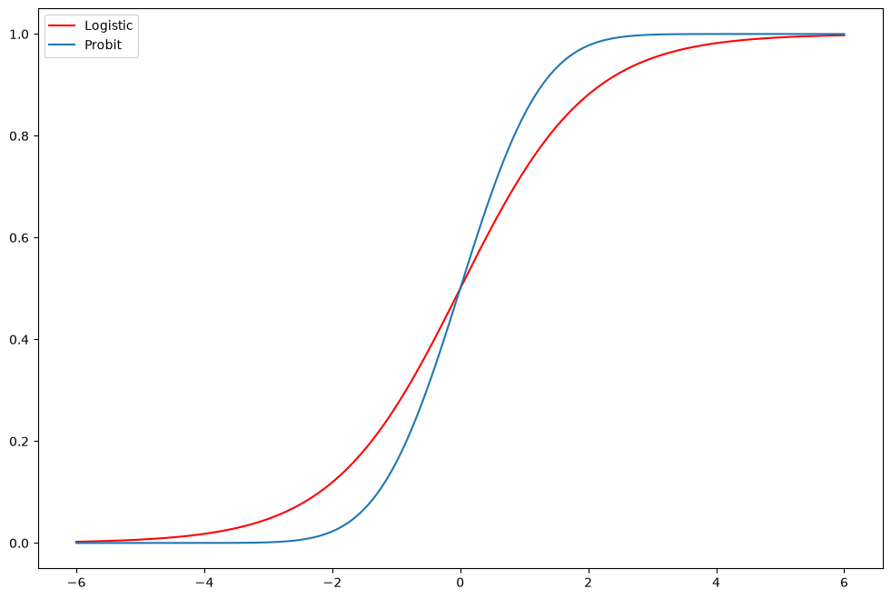
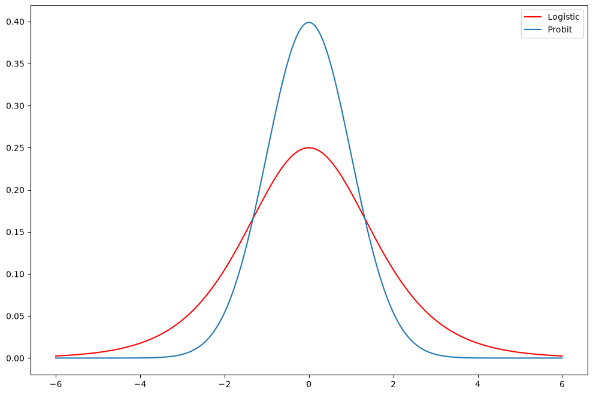
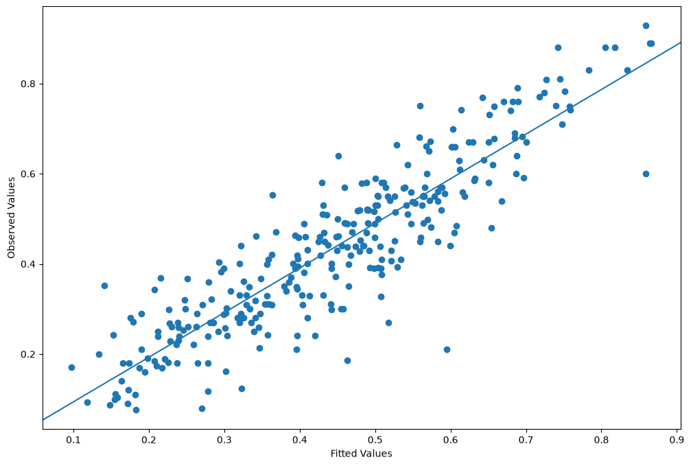
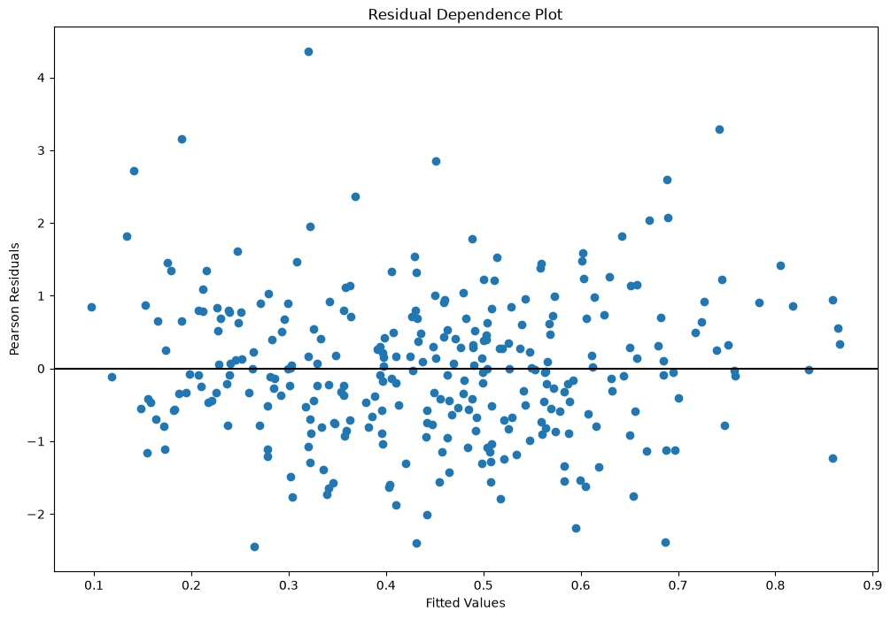
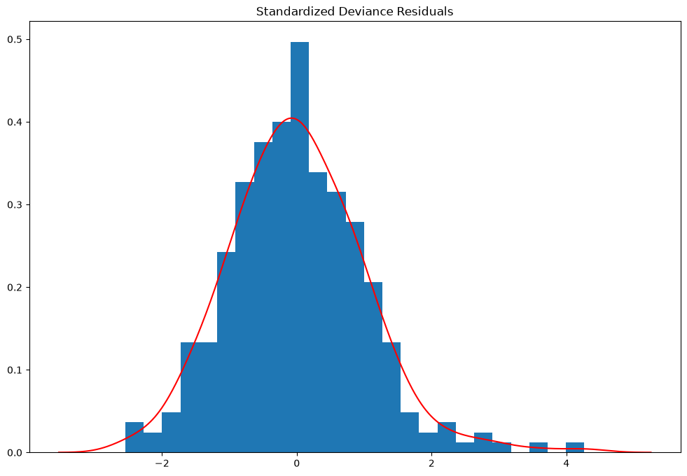
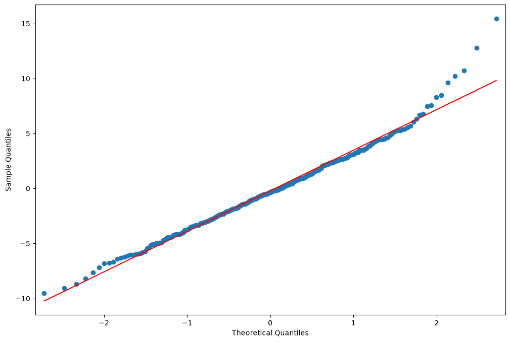

Discrete Choice Models#
Fair’s Affair data#
A survey of women only was conducted in 1974 by Redbook asking about extramarital affairs.
[1]:
%matplotlib inline
[2]:
import matplotlib.pyplot as plt
import numpy as np
import pandas as pd
import statsmodels.api as sm
from scipy import stats
from statsmodels.formula.api import logit
[3]:
print(sm.datasets.fair.SOURCE)
Fair, Ray. 1978. "A Theory of Extramarital Affairs," `Journal of Political
Economy`, February, 45-61.
The data is available at http://fairmodel.econ.yale.edu/rayfair/pdf/2011b.htm
[4]:
print(sm.datasets.fair.NOTE)
::
Number of observations: 6366
Number of variables: 9
Variable name definitions:
rate_marriage : How rate marriage, 1 = very poor, 2 = poor, 3 = fair,
4 = good, 5 = very good
age : Age
yrs_married : No. years married. Interval approximations. See
original paper for detailed explanation.
children : No. children
religious : How relgious, 1 = not, 2 = mildly, 3 = fairly,
4 = strongly
educ : Level of education, 9 = grade school, 12 = high
school, 14 = some college, 16 = college graduate,
17 = some graduate school, 20 = advanced degree
occupation : 1 = student, 2 = farming, agriculture; semi-skilled,
or unskilled worker; 3 = white-colloar; 4 = teacher
counselor social worker, nurse; artist, writers;
technician, skilled worker, 5 = managerial,
administrative, business, 6 = professional with
advanced degree
occupation_husb : Husband's occupation. Same as occupation.
affairs : measure of time spent in extramarital affairs
See the original paper for more details.
[5]:
dta = sm.datasets.fair.load_pandas().data
[6]:
dta["affair"] = (dta["affairs"] > 0).astype(float)
print(dta.head(10))
rate_marriage age yrs_married children religious educ occupation \
0 3.0 32.0 9.0 3.0 3.0 17.0 2.0
1 3.0 27.0 13.0 3.0 1.0 14.0 3.0
2 4.0 22.0 2.5 0.0 1.0 16.0 3.0
3 4.0 37.0 16.5 4.0 3.0 16.0 5.0
4 5.0 27.0 9.0 1.0 1.0 14.0 3.0
5 4.0 27.0 9.0 0.0 2.0 14.0 3.0
6 5.0 37.0 23.0 5.5 2.0 12.0 5.0
7 5.0 37.0 23.0 5.5 2.0 12.0 2.0
8 3.0 22.0 2.5 0.0 2.0 12.0 3.0
9 3.0 27.0 6.0 0.0 1.0 16.0 3.0
occupation_husb affairs affair
0 5.0 0.111111 1.0
1 4.0 3.230769 1.0
2 5.0 1.400000 1.0
3 5.0 0.727273 1.0
4 4.0 4.666666 1.0
5 4.0 4.666666 1.0
6 4.0 0.852174 1.0
7 3.0 1.826086 1.0
8 3.0 4.799999 1.0
9 5.0 1.333333 1.0
[7]:
print(dta.describe())
rate_marriage age yrs_married children religious \
count 6366.000000 6366.000000 6366.000000 6366.000000 6366.000000
mean 4.109645 29.082862 9.009425 1.396874 2.426170
std 0.961430 6.847882 7.280120 1.433471 0.878369
min 1.000000 17.500000 0.500000 0.000000 1.000000
25% 4.000000 22.000000 2.500000 0.000000 2.000000
50% 4.000000 27.000000 6.000000 1.000000 2.000000
75% 5.000000 32.000000 16.500000 2.000000 3.000000
max 5.000000 42.000000 23.000000 5.500000 4.000000
educ occupation occupation_husb affairs affair
count 6366.000000 6366.000000 6366.000000 6366.000000 6366.000000
mean 14.209865 3.424128 3.850141 0.705374 0.322495
std 2.178003 0.942399 1.346435 2.203374 0.467468
min 9.000000 1.000000 1.000000 0.000000 0.000000
25% 12.000000 3.000000 3.000000 0.000000 0.000000
50% 14.000000 3.000000 4.000000 0.000000 0.000000
75% 16.000000 4.000000 5.000000 0.484848 1.000000
max 20.000000 6.000000 6.000000 57.599991 1.000000
[8]:
affair_mod = logit(
"affair ~ occupation + educ + occupation_husb"
"+ rate_marriage + age + yrs_married + children"
" + religious",
dta,
).fit()
Optimization terminated successfully.
Current function value: 0.545314
Iterations 6
[9]:
print(affair_mod.summary())
Logit Regression Results
==============================================================================
Dep. Variable: affair No. Observations: 6366
Model: Logit Df Residuals: 6357
Method: MLE Df Model: 8
Date: Fri, 26 Jun 2026 Pseudo R-squ.: 0.1327
Time: 10:48:16 Log-Likelihood: -3471.5
converged: True LL-Null: -4002.5
Covariance Type: nonrobust LLR p-value: 5.807e-224
===================================================================================
coef std err z P>|z| [0.025 0.975]
-----------------------------------------------------------------------------------
Intercept 3.7257 0.299 12.470 0.000 3.140 4.311
occupation 0.1602 0.034 4.717 0.000 0.094 0.227
educ -0.0392 0.015 -2.533 0.011 -0.070 -0.009
occupation_husb 0.0124 0.023 0.541 0.589 -0.033 0.057
rate_marriage -0.7161 0.031 -22.784 0.000 -0.778 -0.655
age -0.0605 0.010 -5.885 0.000 -0.081 -0.040
yrs_married 0.1100 0.011 10.054 0.000 0.089 0.131
children -0.0042 0.032 -0.134 0.893 -0.066 0.058
religious -0.3752 0.035 -10.792 0.000 -0.443 -0.307
===================================================================================
How well are we predicting?
[10]:
affair_mod.pred_table()
[10]:
array([[3882., 431.],
[1326., 727.]])
The coefficients of the discrete choice model do not tell us much. What we’re after is marginal effects.
[11]:
mfx = affair_mod.get_margeff()
print(mfx.summary())
Logit Marginal Effects
=====================================
Dep. Variable: affair
Method: dydx
At: overall
===================================================================================
dy/dx std err z P>|z| [0.025 0.975]
-----------------------------------------------------------------------------------
occupation 0.0293 0.006 4.744 0.000 0.017 0.041
educ -0.0072 0.003 -2.538 0.011 -0.013 -0.002
occupation_husb 0.0023 0.004 0.541 0.589 -0.006 0.010
rate_marriage -0.1308 0.005 -26.891 0.000 -0.140 -0.121
age -0.0110 0.002 -5.937 0.000 -0.015 -0.007
yrs_married 0.0201 0.002 10.327 0.000 0.016 0.024
children -0.0008 0.006 -0.134 0.893 -0.012 0.011
religious -0.0685 0.006 -11.119 0.000 -0.081 -0.056
===================================================================================
[12]:
respondent1000 = dta.iloc[1000]
print(respondent1000)
rate_marriage 4.000000
age 37.000000
yrs_married 23.000000
children 3.000000
religious 3.000000
educ 12.000000
occupation 3.000000
occupation_husb 4.000000
affairs 0.521739
affair 1.000000
Name: 1000, dtype: float64
[13]:
resp = dict(
zip(
range(1, 9),
respondent1000[
[
"occupation",
"educ",
"occupation_husb",
"rate_marriage",
"age",
"yrs_married",
"children",
"religious",
]
].tolist(),
)
)
resp.update({0: 1})
print(resp)
{1: 3.0, 2: 12.0, 3: 4.0, 4: 4.0, 5: 37.0, 6: 23.0, 7: 3.0, 8: 3.0, 0: 1}
[14]:
mfx = affair_mod.get_margeff(atexog=resp)
print(mfx.summary())
Logit Marginal Effects
=====================================
Dep. Variable: affair
Method: dydx
At: overall
===================================================================================
dy/dx std err z P>|z| [0.025 0.975]
-----------------------------------------------------------------------------------
occupation 0.0400 0.008 4.711 0.000 0.023 0.057
educ -0.0098 0.004 -2.537 0.011 -0.017 -0.002
occupation_husb 0.0031 0.006 0.541 0.589 -0.008 0.014
rate_marriage -0.1788 0.008 -22.743 0.000 -0.194 -0.163
age -0.0151 0.003 -5.928 0.000 -0.020 -0.010
yrs_married 0.0275 0.003 10.256 0.000 0.022 0.033
children -0.0011 0.008 -0.134 0.893 -0.017 0.014
religious -0.0937 0.009 -10.722 0.000 -0.111 -0.077
===================================================================================
predict expects a DataFrame since patsy is used to select columns.
[15]:
respondent1000 = dta.iloc[[1000]]
affair_mod.predict(respondent1000)
[15]:
1000 0.518782
dtype: float64
[16]:
affair_mod.fittedvalues[1000]
[16]:
np.float64(0.07516159285058754)
[17]:
affair_mod.model.cdf(affair_mod.fittedvalues[1000])
[17]:
np.float64(0.5187815572121532)
The “correct” model here is likely the Tobit model. We have an work in progress branch “tobit-model” on github, if anyone is interested in censored regression models.
Exercise: Logit vs Probit#
[18]:
fig = plt.figure(figsize=(12, 8))
ax = fig.add_subplot(111)
support = np.linspace(-6, 6, 1000)
ax.plot(support, stats.logistic.cdf(support), "r-", label="Logistic")
ax.plot(support, stats.norm.cdf(support), label="Probit")
ax.legend()
[18]:
<matplotlib.legend.Legend at 0x7f51286786e0>

[19]:
fig = plt.figure(figsize=(12, 8))
ax = fig.add_subplot(111)
support = np.linspace(-6, 6, 1000)
ax.plot(support, stats.logistic.pdf(support), "r-", label="Logistic")
ax.plot(support, stats.norm.pdf(support), label="Probit")
ax.legend()
[19]:
<matplotlib.legend.Legend at 0x7f51284bba10>

Compare the estimates of the Logit Fair model above to a Probit model. Does the prediction table look better? Much difference in marginal effects?
Generalized Linear Model Example#
[20]:
print(sm.datasets.star98.SOURCE)
Jeff Gill's `Generalized Linear Models: A Unified Approach`
http://jgill.wustl.edu/research/books.html
[21]:
print(sm.datasets.star98.DESCRLONG)
This data is on the California education policy and outcomes (STAR program
results for 1998. The data measured standardized testing by the California
Department of Education that required evaluation of 2nd - 11th grade students
by the the Stanford 9 test on a variety of subjects. This dataset is at
the level of the unified school district and consists of 303 cases. The
binary response variable represents the number of 9th graders scoring
over the national median value on the mathematics exam.
The data used in this example is only a subset of the original source.
[22]:
print(sm.datasets.star98.NOTE)
::
Number of Observations - 303 (counties in California).
Number of Variables - 13 and 8 interaction terms.
Definition of variables names::
NABOVE - Total number of students above the national median for the
math section.
NBELOW - Total number of students below the national median for the
math section.
LOWINC - Percentage of low income students
PERASIAN - Percentage of Asian student
PERBLACK - Percentage of black students
PERHISP - Percentage of Hispanic students
PERMINTE - Percentage of minority teachers
AVYRSEXP - Sum of teachers' years in educational service divided by the
number of teachers.
AVSALK - Total salary budget including benefits divided by the number
of full-time teachers (in thousands)
PERSPENK - Per-pupil spending (in thousands)
PTRATIO - Pupil-teacher ratio.
PCTAF - Percentage of students taking UC/CSU prep courses
PCTCHRT - Percentage of charter schools
PCTYRRND - Percentage of year-round schools
The below variables are interaction terms of the variables defined
above.
PERMINTE_AVYRSEXP
PEMINTE_AVSAL
AVYRSEXP_AVSAL
PERSPEN_PTRATIO
PERSPEN_PCTAF
PTRATIO_PCTAF
PERMINTE_AVTRSEXP_AVSAL
PERSPEN_PTRATIO_PCTAF
[23]:
dta = sm.datasets.star98.load_pandas().data
print(dta.columns)
Index(['NABOVE', 'NBELOW', 'LOWINC', 'PERASIAN', 'PERBLACK', 'PERHISP',
'PERMINTE', 'AVYRSEXP', 'AVSALK', 'PERSPENK', 'PTRATIO', 'PCTAF',
'PCTCHRT', 'PCTYRRND', 'PERMINTE_AVYRSEXP', 'PERMINTE_AVSAL',
'AVYRSEXP_AVSAL', 'PERSPEN_PTRATIO', 'PERSPEN_PCTAF', 'PTRATIO_PCTAF',
'PERMINTE_AVYRSEXP_AVSAL', 'PERSPEN_PTRATIO_PCTAF'],
dtype='str')
[24]:
print(
dta[
["NABOVE", "NBELOW", "LOWINC", "PERASIAN", "PERBLACK", "PERHISP", "PERMINTE"]
].head(10)
)
NABOVE NBELOW LOWINC PERASIAN PERBLACK PERHISP PERMINTE
0 452.0 355.0 34.39730 23.299300 14.235280 11.411120 15.918370
1 144.0 40.0 17.36507 29.328380 8.234897 9.314884 13.636360
2 337.0 234.0 32.64324 9.226386 42.406310 13.543720 28.834360
3 395.0 178.0 11.90953 13.883090 3.796973 11.443110 11.111110
4 8.0 57.0 36.88889 12.187500 76.875000 7.604167 43.589740
5 1348.0 899.0 20.93149 28.023510 4.643221 13.808160 15.378490
6 477.0 887.0 53.26898 8.447858 19.374830 37.905330 25.525530
7 565.0 347.0 15.19009 3.665781 2.649680 13.092070 6.203008
8 205.0 320.0 28.21582 10.430420 6.786374 32.334300 13.461540
9 469.0 598.0 32.77897 17.178310 12.484930 28.323290 27.259890
[25]:
print(
dta[
["AVYRSEXP", "AVSALK", "PERSPENK", "PTRATIO", "PCTAF", "PCTCHRT", "PCTYRRND"]
].head(10)
)
AVYRSEXP AVSALK PERSPENK PTRATIO PCTAF PCTCHRT PCTYRRND
0 14.70646 59.15732 4.445207 21.71025 57.03276 0.0 22.222220
1 16.08324 59.50397 5.267598 20.44278 64.62264 0.0 0.000000
2 14.59559 60.56992 5.482922 18.95419 53.94191 0.0 0.000000
3 14.38939 58.33411 4.165093 21.63539 49.06103 0.0 7.142857
4 13.90568 63.15364 4.324902 18.77984 52.38095 0.0 0.000000
5 14.97755 66.97055 3.916104 24.51914 44.91578 0.0 2.380952
6 14.67829 57.62195 4.270903 22.21278 32.28916 0.0 12.121210
7 13.66197 63.44740 4.309734 24.59026 30.45267 0.0 0.000000
8 16.41760 57.84564 4.527603 21.74138 22.64574 0.0 0.000000
9 12.51864 57.80141 4.648917 20.26010 26.07099 0.0 0.000000
[26]:
formula = "NABOVE + NBELOW ~ LOWINC + PERASIAN + PERBLACK + PERHISP + PCTCHRT "
formula += "+ PCTYRRND + PERMINTE*AVYRSEXP*AVSALK + PERSPENK*PTRATIO*PCTAF"
Aside: Binomial distribution#
Toss a six-sided die 5 times, what’s the probability of exactly 2 fours?
[27]:
stats.binom(5, 1.0 / 6).pmf(2)
[27]:
np.float64(0.16075102880658423)
[28]:
from scipy.special import comb
comb(5, 2) * (1 / 6.0) ** 2 * (5 / 6.0) ** 3
[28]:
np.float64(0.1607510288065844)
[29]:
from statsmodels.formula.api import glm
glm_mod = glm(formula, dta, family=sm.families.Binomial()).fit()
[30]:
print(glm_mod.summary())
Generalized Linear Model Regression Results
================================================================================
Dep. Variable: ['NABOVE', 'NBELOW'] No. Observations: 303
Model: GLM Df Residuals: 282
Model Family: Binomial Df Model: 20
Link Function: Logit Scale: 1.0000
Method: IRLS Log-Likelihood: -2998.6
Date: Fri, 26 Jun 2026 Deviance: 4078.8
Time: 10:48:18 Pearson chi2: 4.05e+03
No. Iterations: 5 Pseudo R-squ. (CS): 1.000
Covariance Type: nonrobust
============================================================================================
coef std err z P>|z| [0.025 0.975]
--------------------------------------------------------------------------------------------
Intercept 2.9589 1.547 1.913 0.056 -0.073 5.990
LOWINC -0.0168 0.000 -38.749 0.000 -0.018 -0.016
PERASIAN 0.0099 0.001 16.505 0.000 0.009 0.011
PERBLACK -0.0187 0.001 -25.182 0.000 -0.020 -0.017
PERHISP -0.0142 0.000 -32.818 0.000 -0.015 -0.013
PCTCHRT 0.0049 0.001 3.921 0.000 0.002 0.007
PCTYRRND -0.0036 0.000 -15.878 0.000 -0.004 -0.003
PERMINTE 0.2545 0.030 8.498 0.000 0.196 0.313
AVYRSEXP 0.2407 0.057 4.212 0.000 0.129 0.353
PERMINTE:AVYRSEXP -0.0141 0.002 -7.391 0.000 -0.018 -0.010
AVSALK 0.0804 0.014 5.775 0.000 0.053 0.108
PERMINTE:AVSALK -0.0040 0.000 -8.450 0.000 -0.005 -0.003
AVYRSEXP:AVSALK -0.0039 0.001 -4.059 0.000 -0.006 -0.002
PERMINTE:AVYRSEXP:AVSALK 0.0002 2.99e-05 7.428 0.000 0.000 0.000
PERSPENK -1.9522 0.317 -6.162 0.000 -2.573 -1.331
PTRATIO -0.3341 0.061 -5.453 0.000 -0.454 -0.214
PERSPENK:PTRATIO 0.0917 0.015 6.321 0.000 0.063 0.120
PCTAF -0.1690 0.033 -5.169 0.000 -0.233 -0.105
PERSPENK:PCTAF 0.0490 0.007 6.574 0.000 0.034 0.064
PTRATIO:PCTAF 0.0080 0.001 5.362 0.000 0.005 0.011
PERSPENK:PTRATIO:PCTAF -0.0022 0.000 -6.445 0.000 -0.003 -0.002
============================================================================================
The number of trials
[31]:
glm_mod.model.data.orig_endog.sum(1)
/tmp/ipykernel_4206/1222798614.py:1: Pandas4Warning: Starting with pandas version 4.0 all arguments of sum will be keyword-only.
glm_mod.model.data.orig_endog.sum(1)
[31]:
0 807.0
1 184.0
2 571.0
3 573.0
4 65.0
...
298 342.0
299 154.0
300 595.0
301 709.0
302 156.0
Length: 303, dtype: float64
[32]:
glm_mod.fittedvalues * glm_mod.model.data.orig_endog.sum(1)
/tmp/ipykernel_4206/1027078210.py:1: Pandas4Warning: Starting with pandas version 4.0 all arguments of sum will be keyword-only.
glm_mod.fittedvalues * glm_mod.model.data.orig_endog.sum(1)
[32]:
0 470.732584
1 138.266178
2 285.832629
3 392.702917
4 20.963146
...
298 111.464708
299 61.037884
300 235.517446
301 290.952508
302 53.312851
Length: 303, dtype: float64
First differences: We hold all explanatory variables constant at their means and manipulate the percentage of low income households to assess its impact on the response variables:
[33]:
exog = glm_mod.model.data.orig_exog # get the dataframe
[34]:
means25 = exog.mean()
print(means25)
Intercept 1.000000
LOWINC 41.409877
PERASIAN 5.896335
PERBLACK 5.636808
PERHISP 34.398080
PCTCHRT 1.175909
PCTYRRND 11.611905
PERMINTE 14.694747
AVYRSEXP 14.253875
PERMINTE:AVYRSEXP 209.018700
AVSALK 58.640258
PERMINTE:AVSALK 879.979883
AVYRSEXP:AVSALK 839.718173
PERMINTE:AVYRSEXP:AVSALK 12585.266464
PERSPENK 4.320310
PTRATIO 22.464250
PERSPENK:PTRATIO 96.295756
PCTAF 33.630593
PERSPENK:PCTAF 147.235740
PTRATIO:PCTAF 747.445536
PERSPENK:PTRATIO:PCTAF 3243.607568
dtype: float64
[35]:
means25["LOWINC"] = exog["LOWINC"].quantile(0.25)
print(means25)
Intercept 1.000000
LOWINC 26.683040
PERASIAN 5.896335
PERBLACK 5.636808
PERHISP 34.398080
PCTCHRT 1.175909
PCTYRRND 11.611905
PERMINTE 14.694747
AVYRSEXP 14.253875
PERMINTE:AVYRSEXP 209.018700
AVSALK 58.640258
PERMINTE:AVSALK 879.979883
AVYRSEXP:AVSALK 839.718173
PERMINTE:AVYRSEXP:AVSALK 12585.266464
PERSPENK 4.320310
PTRATIO 22.464250
PERSPENK:PTRATIO 96.295756
PCTAF 33.630593
PERSPENK:PCTAF 147.235740
PTRATIO:PCTAF 747.445536
PERSPENK:PTRATIO:PCTAF 3243.607568
dtype: float64
[36]:
means75 = exog.mean()
means75["LOWINC"] = exog["LOWINC"].quantile(0.75)
print(means75)
Intercept 1.000000
LOWINC 55.460075
PERASIAN 5.896335
PERBLACK 5.636808
PERHISP 34.398080
PCTCHRT 1.175909
PCTYRRND 11.611905
PERMINTE 14.694747
AVYRSEXP 14.253875
PERMINTE:AVYRSEXP 209.018700
AVSALK 58.640258
PERMINTE:AVSALK 879.979883
AVYRSEXP:AVSALK 839.718173
PERMINTE:AVYRSEXP:AVSALK 12585.266464
PERSPENK 4.320310
PTRATIO 22.464250
PERSPENK:PTRATIO 96.295756
PCTAF 33.630593
PERSPENK:PCTAF 147.235740
PTRATIO:PCTAF 747.445536
PERSPENK:PTRATIO:PCTAF 3243.607568
dtype: float64
Again, predict expects a DataFrame since patsy is used to select columns.
[37]:
resp25 = glm_mod.predict(pd.DataFrame(means25).T)
resp75 = glm_mod.predict(pd.DataFrame(means75).T)
diff = resp75 - resp25
The interquartile first difference for the percentage of low income households in a school district is:
[38]:
print("%2.4f%%" % (diff[0] * 100))
-11.8863%
[39]:
nobs = glm_mod.nobs
y = glm_mod.model.endog
yhat = glm_mod.mu
[40]:
from statsmodels.graphics.api import abline_plot
fig = plt.figure(figsize=(12, 8))
ax = fig.add_subplot(111, ylabel="Observed Values", xlabel="Fitted Values")
ax.scatter(yhat, y)
y_vs_yhat = sm.OLS(y, sm.add_constant(yhat, prepend=True)).fit()
fig = abline_plot(model_results=y_vs_yhat, ax=ax)

Plot fitted values vs Pearson residuals#
Pearson residuals are defined to be
where var is typically determined by the family. E.g., binomial variance is \(np(1 - p)\)
[41]:
fig = plt.figure(figsize=(12, 8))
ax = fig.add_subplot(
111,
title="Residual Dependence Plot",
xlabel="Fitted Values",
ylabel="Pearson Residuals",
)
ax.scatter(yhat, stats.zscore(glm_mod.resid_pearson))
ax.axis("tight")
ax.plot([0.0, 1.0], [0.0, 0.0], "k-")
[41]:
[<matplotlib.lines.Line2D at 0x7f512433a900>]

Histogram of standardized deviance residuals with Kernel Density Estimate overlaid#
The definition of the deviance residuals depends on the family. For the Binomial distribution this is
They can be used to detect ill-fitting covariates
[42]:
resid = glm_mod.resid_deviance
resid_std = stats.zscore(resid)
kde_resid = sm.nonparametric.KDEUnivariate(resid_std)
kde_resid.fit()
[42]:
<statsmodels.nonparametric.kde.KDEUnivariate at 0x7f51243c46e0>
[43]:
fig = plt.figure(figsize=(12, 8))
ax = fig.add_subplot(111, title="Standardized Deviance Residuals")
ax.hist(resid_std, bins=25, density=True)
ax.plot(kde_resid.support, kde_resid.density, "r")
[43]:
[<matplotlib.lines.Line2D at 0x7f51243b06e0>]

QQ-plot of deviance residuals#
[44]:
fig = plt.figure(figsize=(12, 8))
ax = fig.add_subplot(111)
fig = sm.graphics.qqplot(resid, line="r", ax=ax)
